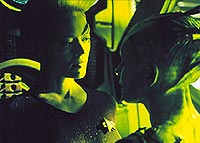
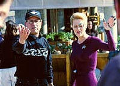
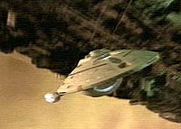
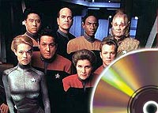

|

 om
Deep Space Nine a plenos pulmes, chegava a hora de A
Nova Gerao dar seu adeus s telinhas. Para substitui-la,
a Paramount queria uma outra srie, que ajudaria o estdio a
lanar uma nova rede de televiso nos EUA. Com essa misso em
mente, Rick Berman, Michael Piller e Jeri Taylor criaram Voyager.
Conhea um pouco mais o seriado clicando aqui. om
Deep Space Nine a plenos pulmes, chegava a hora de A
Nova Gerao dar seu adeus s telinhas. Para substitui-la,
a Paramount queria uma outra srie, que ajudaria o estdio a
lanar uma nova rede de televiso nos EUA. Com essa misso em
mente, Rick Berman, Michael Piller e Jeri Taylor criaram Voyager.
Conhea um pouco mais o seriado clicando aqui. |


|
Nosso colunista faz anlises regulares de Voyager, envolvendo produo, bastidores, efeitos especiais, influncias e muito mais. No deixe de conferir seu texto mais recente aqui, e confira tambm o Acervo com todas as colunas anteriores. |
|
Saiba tudo que h para saber sobre os 172 programas que compuseram Voyager, com sinopse detalhada, comentrios, curiosidades, citaes e ficha tcnica, clicando aqui. |
 |
Conhea toda a histria da produo da srie de Jornada nas Estrelas que foi um marco em efeitos especiais feitos para a televiso e ajudou a lanar uma nova rede nacional nos EUA, clicando aqui. |
 |
Todos os detalhes que envolvem o ambiente fictcio de Voyager, incluindo aliengenas, personagens, cronologia e informaes sobre a USS Voyager (NCC-74656) e sua misso, esto aqui. |
 |
Encontre aqui material que alia elementos de todos os itens acima, alm de informaes detalhadas dos lanamentos de Voyager ao longo dos anos (no Brasil e no exterior) e as novidades do formato DVD. |
 |